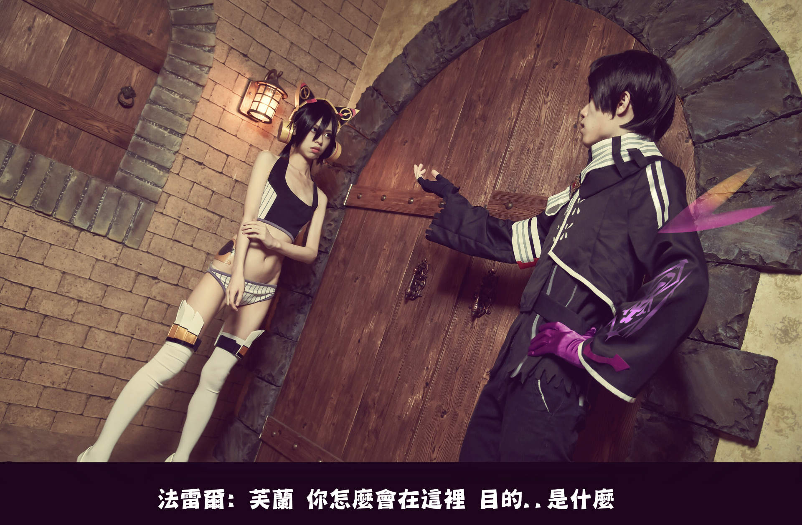

Sol Trigger 芙蘭&法雷爾
今天來更新我一直以來很喜歡的遊戲 Sol trigger ←這款遊戲非常之冷門
不管當時討論度還有出角或是同人作品都非常稀少
我這種cp廚想吃精神糧食都得靠自產才行
這次努力想還原小黑屋橋段，非常喜歡芙蘭跟法雷爾兩人最後的那段
互相理解跟告白(走ㄐ娘線的我 雖然爸爸不管跟誰在一起最後都會悲劇 
點這可以看水管
→ 還原機娘線劇情參考
以下↓上圖


貼貼自己出ㄐ娘
芙蘭：我只是奉命行事的機械人偶而已

貼我萬年好搭檔，也出我非常喜歡的老實人法雷爾爸爸
真的是好人不償命，苦逼杯催人 
法雷爾：為了大家，還要再努力變得更強才行

幕後的ㄐ娘跟爸爸，要是在最終戰前能說清楚就好了 

非常歡迎有玩過這遊戲、喜歡這遊戲，還有跟我一樣喜歡ㄐ娘跟爸爸的人都找我聊天
我很需要這部同好←雖然我也邊緣了好幾年了(RY
然後為了ㄐ娘背後那煞氣的教會象徵 貼完刺青貼 我腰跟背 皮膚整個大過敏
不過能還原 還是值得辣 
感謝觀賞